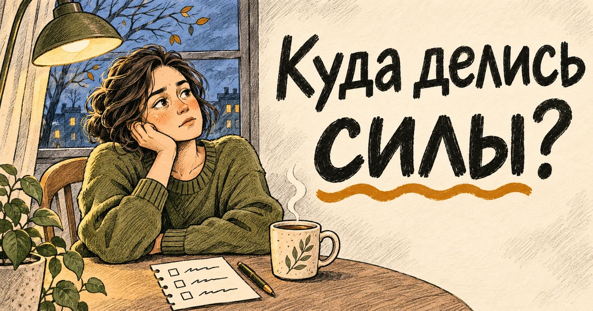
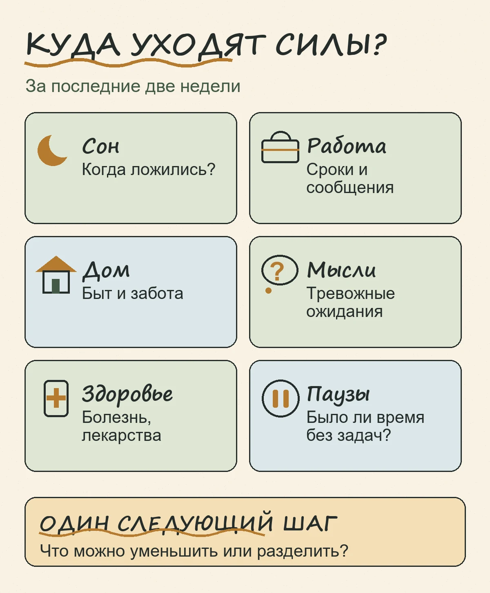
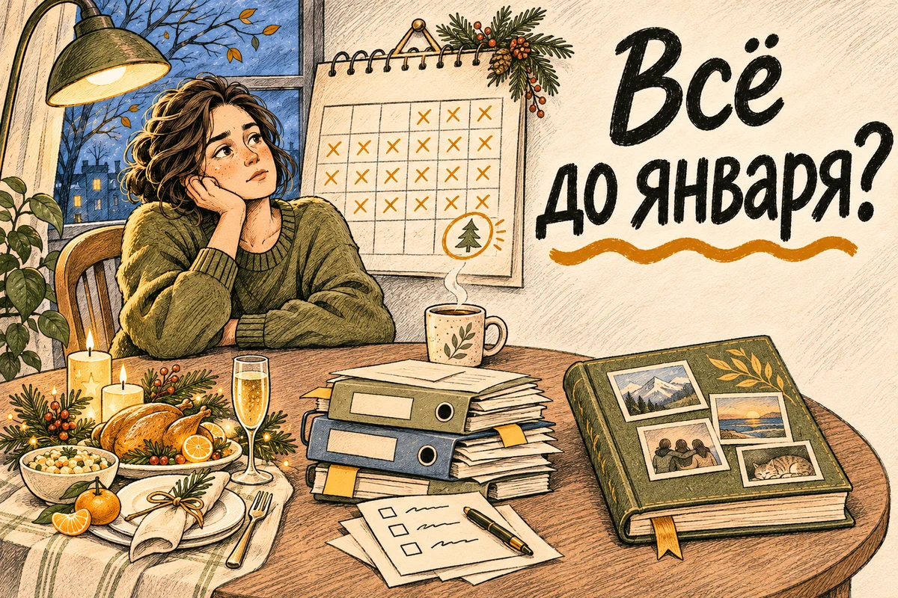
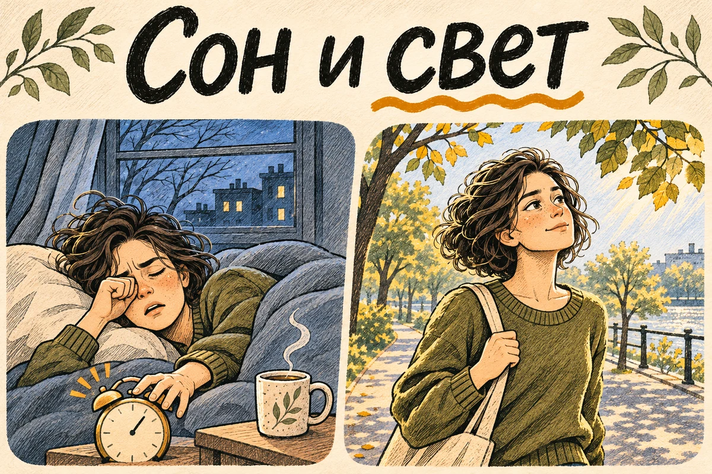
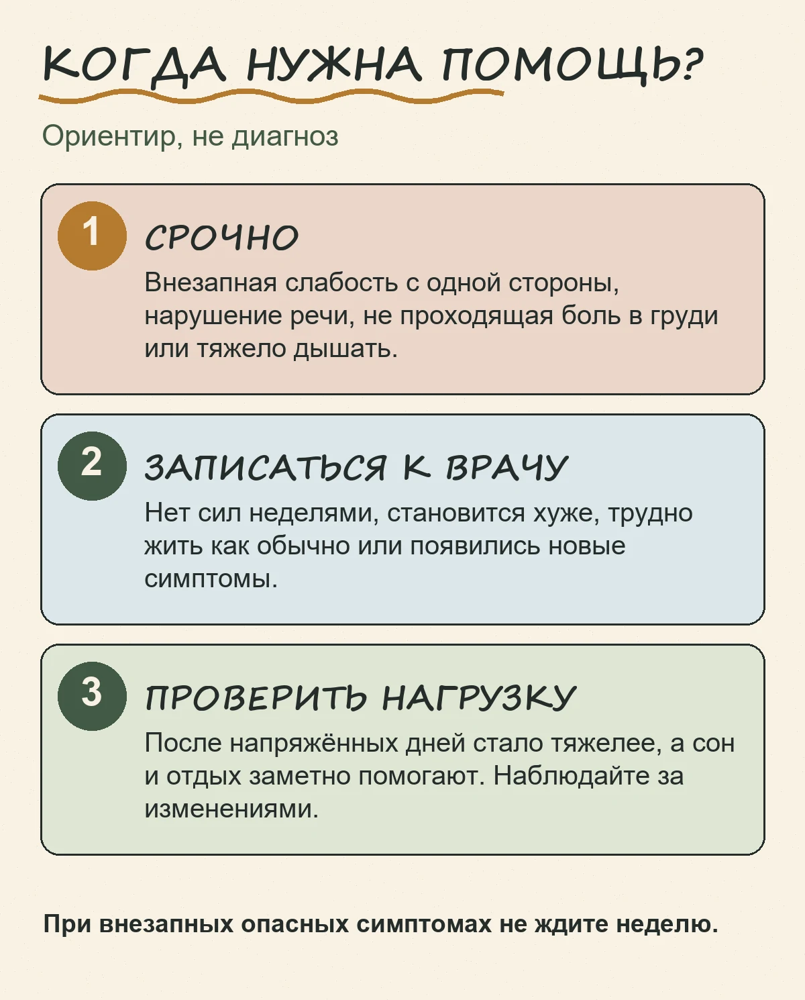
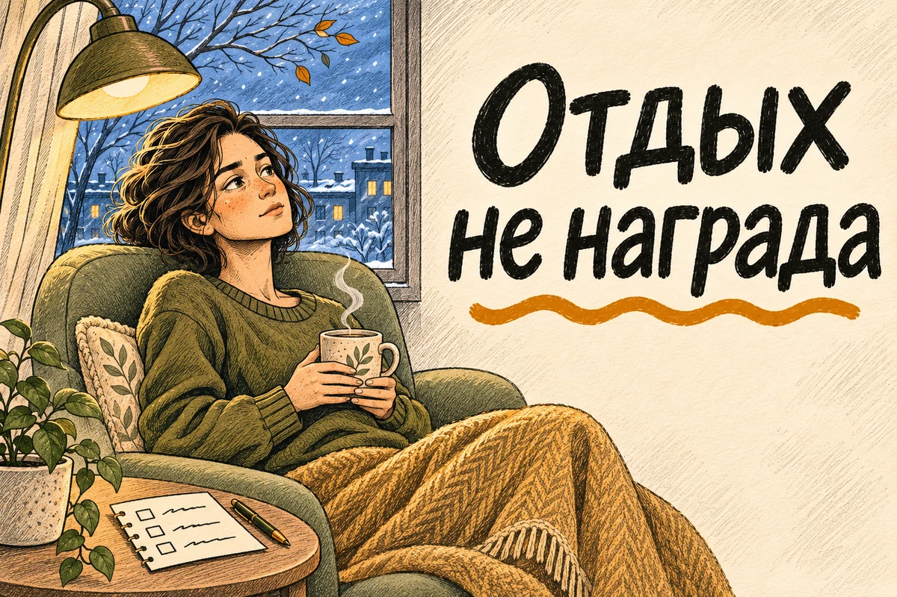
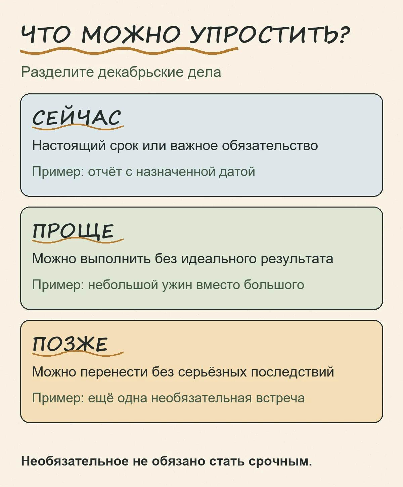

Главная → Блог → Нет сил к концу года
Почему к концу года нет сил, даже если я ничего особенного не делал
16.11.2026 · 16 минут чтения
Ноябрь. Вы открываете список дел и видите обычную жизнь: работа, покупки, сообщения, домашние вопросы. Никакого марафона, переезда или больших потрясений. Но утром трудно встать, вечером не хочется ни с кем разговаривать, а мысль о декабре вызывает не предвкушение, а вопрос: «Как я всё это потяну?»
Сравнение с другими быстро превращается в обвинение: «Люди справляются с куда большим. Почему я устал, если ничего особенного не делал?» Проблема в том, что усталость не ведёт бухгалтерию только крупных событий. Сон, болезни, постоянные мелкие решения, напряжение на работе, забота о близких и необходимость всё время быть на связи тоже занимают силы. А иногда дело вообще не в нагрузке — выраженная или длительная слабость требует проверки здоровья.
Попробуем разобраться без ярлыка «ленивый» и без обещания, что один выходной всё исправит.
Если нужен короткий ответ: к концу года силы могут заканчиваться из-за сочетания повседневной нагрузки, недосыпа, тревоги и предновогодних сроков. Но выраженная или длительная слабость бывает связана и со здоровьем. Начните с двух вопросов: что именно изменилось за последние недели? и помогает ли обычный отдых? Ниже есть короткая карта, которую можно заполнить сразу.
- Чувство «я ничего не сделал» часто не учитывает повторяющуюся и незаметную работу: планирование, переключения, переживания, заботу о других.
- Конец года может добавить нагрузку через сроки, расходы и ожидание «закрыть всё до января». Короткий световой день иногда влияет на сон и настроение, но сам по себе не объясняет любую усталость.
- Выгорание связано с хроническим стрессом на работе. Усталость в целом не равна выгоранию, а по одному симптому нельзя определить депрессию или сезонное расстройство.
- Если усталость длится неделями, усиливается, мешает обычным делам или сопровождается другими симптомами, стоит обсудить её с врачом. Разговор о чувствах полезен, но не заменяет оценку физического состояния.
- На ближайшую неделю задача не «стать продуктивнее», а понять, что забирает силы, где есть пространство для восстановления и какую помощь стоит подключить.

- Куда уходят мои силы: короткая карта
- «Ничего особенного» — это сколько?
- Почему к концу года нет сил: что может влиять
- Усталость, выгорание или что-то другое?
- Почему отдых не всегда помогает
- Что делать, если к концу года нет сил
- Как поговорить с врачом, если кажется, что «жаловаться не на что»
- А если дело не только в конце года?
- Частые вопросы
- Главное
Куда уходят мои силы: короткая карта
Это упражнение для самонаблюдения, не тест и не способ поставить диагноз. Возьмите последние две недели и отметьте, что относится к вам: сон, работа и срочные дела, домашние обязанности, тревожные мысли, болезнь или лекарства, время без требований. Не нужно искать «главную причину» по числу отметок.
Затем допишите три фразы:
- «Больше всего сил уходит на ______».
- «На этой неделе я могу уменьшить или разделить ______».
- «Я обращусь за медицинской оценкой, если ______».
Например, Марина — вымышленная героиня — работает обычные восемь часов и не берёт сверхурочные. В её карте появляются поздний сон, сообщения после работы, уроки с ребёнком и забота о маме. Она решает попросить партнёра два вечера взять уроки на себя. Это не доказательство причины усталости: если состояние сохраняется или появились новые симптомы, Марина обсудит его с врачом.
Можно скопировать: «За последние две недели изменилось: ___. Мне трудно: ___. Отдых помогает / не помогает: ___. Один шаг на этой неделе: ___. Вопрос врачу: ___».
При внезапной выраженной слабости или тревожных симптомах, описанных ниже, ждать неделю и заполнять карту не нужно.

«Ничего особенного» — это сколько?
Представьте две недели. В первой вы готовили выступление и один раз задержались на работе. Во второй не случилось ничего громкого, но вы каждый день отвечали на срочные сообщения, трижды меняли планы, решали вопрос с документами, слушали тревоги родственника и засыпали позже обычного. Если спросить, какая неделя была «событийной», легко назвать первую. Если спросить, после какой вы сильнее вымотались, ответ может быть другим.
Часть нагрузки не оставляет видимого результата. Разговор, в котором нужно сдерживаться. Ожидание ответа о деньгах или здоровье. Мысль «не забыть записаться, оплатить, поздравить». За день можно решить десять бытовых вопросов и вечером не вспомнить ни одного «достижения»: сделанное было нужно, но не превратилось в готовый проект. Так возникает ощущение, что вы ничего не делали, хотя внимание было занято.
Это житейское объяснение, а не установленная причина симптома. Если в короткой карте не обнаружилось очевидной перегрузки, не надо придумывать её: это дополнительный повод проверить сон и здоровье. Даже если дел оказалось много, физические причины усталости могут существовать одновременно.
Вопрос для проверки: если бы близкий человек прожил вашу последнюю неделю, вы бы тоже сказали ему, что он «ничего особенного не делал»?
Почему к концу года нет сил: что может влиять
Незаметная нагрузка и недостаток восстановления
Вы могли справляться каждый месяц и всё равно редко получать достаточную паузу. Иногда это похоже на телефон, который заряжается только до сорока процентов: он работает, но к вечеру снова выключается. Это метафора, а не объяснение механизма усталости. Она лишь помогает проверить, как давно у вас были сон и отдых, после которых действительно становилось легче.
Обратите внимание на разницу между выходным и отдыхом. В выходной можно заниматься стиркой, покупками и делами семьи, всё время отвечая на сообщения. Формально вы не работали. Фактически мозгу и телу снова приходилось решать задачи. При этом отдых у разных людей выглядит по-разному: кому-то нужен сон, кому-то движение или спокойная встреча, кому-то несколько часов без требований.
Появляется срок «успеть до Нового года»
Календарь превращает открытые задачи в срочные. Отчёты, подарки, встречи, расходы, решения о праздниках и вопрос «чего я добился за год?» оказываются в одной очереди. Даже приятные планы требуют времени и выбора. Когда всё помечено как важное, трудно понять, что действительно нужно сделать сейчас.
Иногда давит не список дел, а ожидание идеального завершения: закончить проекты, помириться со всеми, войти в январь обновлённым человеком. Для реальной жизни это слишком жёсткое условие. Год может закончиться с незакрытыми делами, а вы всё равно имеете право на отдых.
У предновогодней гонки есть три узнаваемые ловушки: идеальный праздник («должно понравиться всем»), нулевой список долгов («до января закрыть вообще всё») и приговор по итогам года («если не достиг цели, год пропал»). Спросите себя, какую из этих задач поставили вам реальные обстоятельства, а какую — ваше представление о «правильном» декабре. Ответ поможет найти то, что можно упростить без серьёзных последствий.

Сон и свет меняются
В холодное время года часть людей замечает, что просыпаться труднее, а настроение и режим сна меняются. У некоторых возникает сезонное аффективное расстройство — форма депрессии с повторяющимся сезонным рисунком. Его признаки шире усталости: могут меняться интерес к привычным занятиям, настроение, сон, аппетит и способность сосредоточиться. Диагноз нельзя поставить по фразе «в ноябре нет сил»: специалист оценивает выраженность, длительность и сезонное повторение симптомов (NHS, NIMH).
Если вы хотите отдельно разобраться с сезонными изменениями настроения, у нас есть материал об осенней депрессии. Здесь важнее не приклеивать это название к каждой зимней усталости, а заметить, что именно изменилось у вас.

Тревога занимает место даже в тихий день
День может быть свободным от крупных событий и при этом заполненным мыслями: «А если сократят?», «Что купить?», «Я опять не успел». Тревога не всегда выглядит как паника. Иногда она проявляется постоянной готовностью реагировать, трудностью отключиться и усталостью от решений. Это одна из возможных причин, а не ответ за каждого человека. Подробнее о том, как она устроена, мы рассказываем в гиде по тревоге.
Здесь важно не подменять отдых новыми требованиями к себе: «Теперь я обязан расслабиться правильно». Если даже свободное время превращается в контроль результата, восстановление становится ещё одним проектом.
Усталость, выгорание или что-то другое?
Слово «выгорание» помогает назвать тяжёлый опыт, но использовать его стоит точно. Всемирная организация здравоохранения описывает выгорание как явление, связанное с хроническим стрессом в рабочем контексте: истощение, дистанция или цинизм по отношению к работе и снижение профессиональной эффективности. Это не медицинский диагноз и не название любой усталости (ВОЗ). Если на работе вы истощены, а вне её постепенно оживаете, полезно прочитать отдельную статью об эмоциональном выгорании.
Но если сил нет везде — на работе, дома, в выходные, после сна — не стоит объяснять всё только характером или рабочей нагрузкой. По данным NHS, длительная усталость бывает связана со сном, стрессом и настроением, а также с анемией, нарушениями работы щитовидной железы, другими заболеваниями или действием лекарств. Самостоятельно отличить одно от другого по статье невозможно.
Что вы называете словами «нет сил»?
Сонливость — хочется уснуть, вы можете задремать днём. Утомление — привычные дела требуют гораздо больше усилий, даже если спать прямо сейчас не хочется. Мышечная слабость — стало заметно труднее выполнить конкретное движение, например подняться по лестнице или удержать предмет. Эти ощущения могут сочетаться, но врачу важно услышать, что именно происходит, когда это началось и что изменилось по сравнению с обычным состоянием. Внезапная слабость руки или ноги, особенно с нарушением речи, — повод для срочной помощи, а не для самонаблюдения (NHS: усталость, NHS: признаки инсульта).
| Что вы замечаете | Что это может подсказать | Что делать дальше |
|---|---|---|
| После нескольких напряжённых дней стало тяжелее, но отдых заметно помогает | Возможно, нагрузка и восстановление временно не совпали | Уменьшить часть требований и посмотреть на сон, еду, паузы |
| Особенно тяжело думать о работе; появились отстранённость и ощущение бессмысленности | Стоит посмотреть на условия работы и признаки выгорания | Обсудить нагрузку, границы и доступные изменения |
| Неделями нет сил почти ни на что, отдых мало помогает; исчез интерес к важному | Нужна более внимательная оценка состояния | Обратиться к врачу и рассказать о настроении, сне и длительности изменений |
| Появилась новая выраженная слабость или другие физические симптомы | Причину нельзя установить по психологическому объяснению | Обратиться за медицинской оценкой |
Эта таблица не ставит диагноз. Она помогает решить, какой следующий шаг разумнее: изменить часть нагрузки, обсудить состояние со специалистом или сделать и то и другое.
Когда стоит обратиться к врачу
Если усталость держится несколько недель, усиливается, мешает повседневной жизни или вы не понимаете её причину, запишитесь к врачу. Особенно важно не откладывать разговор, если вместе с ней появились необъяснимое изменение веса, сильная жажда, одышка, сердцебиение, выраженная сонливость днём или другие новые симптомы. Врач уточнит историю и решит, нужны ли обследования; не стоит назначать себе анализы по списку из интернета (NHS).
Когда нужна срочная помощь: если слабость началась внезапно и сопровождается перекосом лица, онемением или слабостью одной стороны тела, нарушением речи; если появилась не проходящая боль или давление в груди, особенно с одышкой и холодным потом; если трудно дышать настолько, что не получается говорить, вызывайте экстренную медицинскую помощь. Обморок с неполным восстановлением, нарушением речи или движения тоже требует срочной помощи. Даже если признаки возможного инсульта быстро прошли, нужна немедленная оценка. Не ждите неделю и не пытайтесь сначала «восстановить ресурс» (NHS: инсульт, NHS: боль в груди, NHS: одышка, NHS: обморок).
Если настроение остаётся подавленным, пропал интерес к привычному, изменились сон или аппетит и это заметно мешает жить, расскажите об этом тоже. Тяжёлое настроение не обязано выглядеть как слёзы. И наоборот: усталость сама по себе не означает депрессию. О признаках и вариантах помощи мы подробно пишем в статье «Депрессия: признаки и что делать».

Почему отдых не всегда помогает
«Я пролежал в воскресенье, а в понедельник снова разбит». Такое случается по разным причинам. Один день может не компенсировать длительный недосып или месяцы перегрузки. Иногда выходной заполнен мыслями о работе, и тело осталось дома, а внимание — в незавершённых задачах. Иногда режим сна сбился, а иногда причина усталости требует медицинской оценки.
Ещё бывает, что человек разрешает себе только такой отдых, который можно оправдать полезностью: прогулка — ради шагов, книга — для развития, сон — чтобы завтра больше сделать. Когда каждую паузу нужно «отработать», отдых становится частью той же гонки. Попробуйте заметить, что происходит в первые десять минут свободного времени: появляется облегчение, скука, тревога, вина? Ответ поможет понять, что мешает восстановлению, но не заменит медицинскую проверку при устойчивой слабости.
«Не имею права устать»
У этой фразы обычно есть скрытое условие: усталость разрешена только после большого достижения или явной беды. Поэтому человек сравнивает свои дни с чужими более тяжёлыми обстоятельствами и заключает: «Моя усталость недостаточно заслуженная». Но усталость не награда за труд и не соревнование. Она сообщает, что сейчас трудно. Дальше важно выяснить почему.
Если вы часто считаете отдых чем-то постыдным, проверьте, чьим голосом звучит требование быть полезным каждую минуту. Для начала не нужно убеждать себя, что вы «достойны» отдыха. Можно принять более простое правило: базовая забота о себе не требует доказательств продуктивности.

Что делать, если к концу года нет сил
Начните с маленькой проверки, а не с плана «полностью изменить жизнь с понедельника». При сильной усталости длинный список полезных советов сам по себе может стать ещё одной нагрузкой.
1. Возьмите из карты одну проверяемую гипотезу
Вы уже отметили последние две недели в короткой карте выше. Теперь выберите то, что можно проверить без попытки объяснить всю усталость одной причиной. Например: «Вечерние рабочие сообщения не дают мне отключиться». Спросите себя, можно ли на несколько дней ограничить их время и заметить, меняется ли самочувствие. Если такой возможности нет, это тоже важная информация об условиях вашей жизни.
Марина из нашего примера договорилась, что два вечера уроки с ребёнком будет делать партнёр. Она посмотрит, появились ли у неё время для сна и чуть больше сил. Если нет, это не провал упражнения и не повод искать «правильную» психологическую причину. Она сохранит запись о своём состоянии для врача.
2. Разделите задачи на три группы
Возьмите декабрьский список и рядом с каждым пунктом напишите: обязательно сейчас, можно сделать проще, можно перенести или отменить. «Обязательно» — не то же самое, что «мне будет неловко отказаться». Иногда отчёт правда имеет срок, а иногда праздничный ужин из семи блюд существует только как внутреннее требование.
Спросите себя: «Что произойдёт, если я сделаю это на 70%, а не на 100%?» Ответ может быть: «Это повлияет на безопасность или работу» — тогда задачу оставляем. А может быть: «Кто-то подумает, что я недостаточно старался». Тогда есть смысл обсудить ожидания или выбрать более лёгкий вариант. О том, как жёсткая планка влияет на самочувствие, есть статья про перфекционизм.
Что можно не делать до января? Идти на третью необязательную встречу за неделю, украшать дом «как у всех», готовить праздник в одиночку или браться за дополнительную задачу без реального срока. У каждого человека ограничения разные: речь не о том, чтобы бросить обязательства, а о том, чтобы назвать их честно и пересмотреть остальное.

3. Найдите одну утечку сил и одну опору
Не пытайтесь сразу перестроить всё. Выберите один повторяющийся источник нагрузки: вечерние рабочие сообщения, бесконечное сравнение цен на подарки, привычку соглашаться на каждую встречу. Затем выберите одну реальную опору: попросить близкого взять часть дел, оставить один вечер без планов, уточнить приоритеты с руководителем, записаться к врачу.
Опора должна быть конкретной. «Буду лучше заботиться о себе» звучит приятно, но не говорит, что делать завтра. «В среду после работы я не беру дополнительные задачи и ложусь спать вовремя» — уже проверяемый шаг. Он не обещает мгновенного прилива энергии, но помогает увидеть, меняется ли что-нибудь.
4. Попросите о помощи точнее
Человеку трудно ответить на «я больше не могу всё тянуть», если он не понимает, что именно можно взять на себя. Попробуйте одну просьбу: «Ты можешь заказать продукты в четверг?», «Давай в этом году не устраивать большой ужин», «Мне нужен день без рабочих сообщений». Если отказ или просьба вызывают сильную вину, пригодится статья о личных границах.
Просьба о помощи не обязывает рассказывать всю историю усталости. Иногда достаточно назвать задачу и срок. А иногда нужен более серьёзный разговор о том, как распределяются обязанности и почему ваши попытки восстановиться постоянно прерываются.
5. Проверьте результат, а не требуйте немедленного улучшения
Через неделю спросите: стало ли легче просыпаться? Появились ли короткие моменты интереса? Уменьшилось ли ощущение, что день целиком состоит из требований? Если ничего не меняется или становится хуже, это не доказательство, что вы «плохо старались». Это повод обратиться за профессиональной оценкой и пересмотреть предположение о причинах. При внезапной слабости или тревожных признаках из раздела выше помощь нужна сразу — наблюдать неделю не следует.
Разобрать, что именно давит в конце года — сроки, ожидания семьи, вина за отдых или тревога перед январём, — бывает проще в разговоре.
Когда сил мало, не обязательно разбираться во всём в одиночку. Если не понимаете, почему устали, хотя ничего необычного не происходило, расскажите AI Therapist, как прошли последние недели. Разговор поможет упорядочить мысли и выбрать один посильный шаг.
Приложение не проводит медицинскую диагностику. Если усталость длится неделями или появились новые симптомы, обратитесь к врачу.
Скачать AI Therapist в RuStoreКак поговорить с врачом, если кажется, что «жаловаться не на что»
Не нужно заранее знать диагноз или убедительно объяснить, почему вам плохо. Полезно назвать четыре вещи: как давно стало меньше сил, что изменилось в обычной жизни, какие ещё симптомы появились и что вы уже пробовали. Можно принести короткую запись с двумя-тремя примерами: «Раньше после работы гулял, сейчас сразу ложусь»; «Сплю восемь часов, но всё равно клонит в сон»; «Последний месяц трудно сосредоточиться».
Если на приёме вы растеряетесь, прочитайте список с телефона. Разговор о здоровье не экзамен. Даже если причина окажется связана со стрессом, это не делает переживание «несерьёзным». А если выявится физическая причина, тем лучше, что вы не списали её на характер или сезон.
А если дело не только в конце года?
Если вы каждый сезон живёте в режиме «дотянуть до отпуска», календарь может лишь делать заметнее давнюю проблему. Посмотрите, что регулярно истощает вас и что не меняется после отдыха. Эти наблюдения пригодятся и для разговора об условиях работы или дома, и для встречи с врачом.
Частые вопросы
Почему сил нет именно зимой?
Причин может быть несколько: изменившийся сон, короткий световой день, нагрузка, болезни, настроение. У части людей сезонные изменения связаны с депрессией, но по одному времени года и усталости этого не определить. Если состояние выраженное, повторяется или мешает жизни, обсудите его с врачом (NHS).
Можно ли просто перетерпеть до отпуска?
Если усталость понятна после нескольких трудных дней и отдых помогает, пауза может быть полезной. Если она длится неделями, усиливается или мешает повседневным делам, ожидание отпуска откладывает поиск причины. Лучше обратиться к врачу и одновременно посмотреть, что можно облегчить уже сейчас (NHS).
Если я работаю не очень много, это не выгорание?
Количество часов не единственный показатель нагрузки. Но термин «выгорание» относится именно к хроническому стрессу на работе и включает не только истощение, но и изменение отношения к работе и эффективности (ВОЗ). Можно испытывать сильную усталость и без выгорания. Важнее понять вашу ситуацию, чем подобрать ярлык.
Как помочь близкому, который говорит «нет сил», но ничего не меняет?
Не спорьте, достаточно ли он «заслужил» отдых. Спросите, что сейчас труднее всего и какая помощь была бы полезна. Можно предложить конкретное дело или помочь записаться к врачу, если слабость держится долго. Решать за человека всю его жизнь не нужно.
Поможет ли AI Therapist, если я постоянно устал?
Он может помочь описать нагрузку, сформулировать мысли и подготовить вопросы для разговора с близкими или врачом. Он не определяет медицинскую причину слабости и не заменяет обследование. Если состояние не проходит или появились новые симптомы, первым важным шагом будет медицинская оценка.
Главное
Не нужно доказывать, что год был достаточно тяжёлым, чтобы признать усталость. Выберите один посильный шаг и проверьте, что меняется. Если слабость сохраняется или нарастает, обратитесь к врачу: забота о себе начинается с вопроса «что со мной происходит и какая помощь нужна сейчас?»
Источники
NHS — усталость и возможные причины; NHS — сезонное аффективное расстройство; NIMH — сезонное аффективное расстройство; ВОЗ — определение выгорания; NHS — признаки инсульта; NHS — боль в груди; NHS — одышка; NHS — обморок.
Как подготовлен материал. Редакция AI Therapist опиралась на перечисленные медицинские источники. Примеры условные. Материал не заменяет консультацию врача.